Antenna Effect in VLSI
The most sensitive component of a MOS transistor is the gate oxide. During the construction of an ASIC, special care must be taken to safeguard it from damage both throughout the fabrication process and during the functioning of the ASIC. Some unwanted impacts can arise throughout an actual manufacturing process. The antenna effect in VLSI, also known as plasma-induced gate-oxide damage or plasma-induced damage, is one of them.
In VLSI, the antenna effect refers to the charge collecting effect, not to an actual antenna device. A large quantity of charge is often induced during plasma etching and other fabrication procedures. The antenna effect in VLSI is a phenomenon that can harm the gate oxide of MOS transistors during the fabrication process, particularly when using plasma etching. In this section, we will look into the antenna effect and the factors that contribute to it.
The antenna effect in VLSI is also known as plasma-generated gate oxide damage. It is a phenomenon that can result in yield and reliability issues when MOS integrated circuits are manufactured.
Reason Behind the Antenna Effect in VLSI
If a conducting material or wire is linked to the device's gate, the wire acts as an antenna, inducing a considerable amount of charge. The diodes formed by drain and source diffusion layers can conduct a significant amount of current. Finally, the antenna effect can cause:
- Gate oxide failure
- Deterioration of I–V characteristics
- Change in threshold voltage
- Lower device life expectancy
- Increased gate leakage
Because of these risks, antenna guidelines have been established to prevent such issues.
Common Preventive Solutions
- Wire Splitting
One solution is to split the long wire into two sections and connect the wire and gate through a buffer layer.
- Diode Insertion
Another option is to attach a diode to the wire and establish a discharge path during the etching process.
Although the term “Antenna Effect” suggests electromagnetic radiation or transmitter-receiver systems, this is not the case. A more appropriate name is Plasma Induced Gate Oxide Damage, which accurately describes the phenomenon. This damage is induced by gate oxide exposure to plasma during the fabrication of VLSI devices.
Occurrence of Antenna Effect
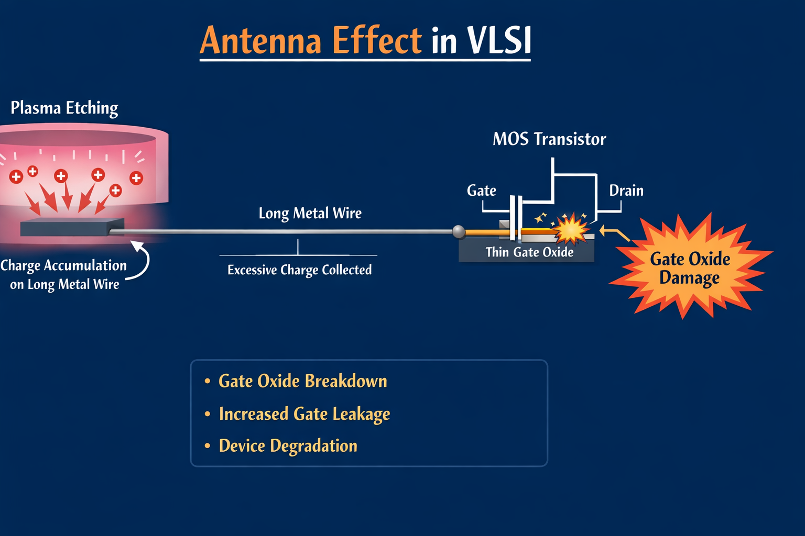
Although the antenna effect in VLSI occurs during the chip fabrication process—particularly during plasma etching—the avoidance mechanism should be established from the physical design stage itself.
During the physical signoff step, the fabrication laboratory provides the antenna rule file, which must be examined and cleaned according to the antenna rule.
Fabrication Flow and Antenna Effect
The fabrication flow consists of two major stages:
1. FEOL (Front End of Line)
- Involves fabrication of all MOS transistors.
- No metal interconnect fabrication occurs at this stage.
2. BEOL (Back End of Line)
- Begins after FEOL is completed.
- Involves fabrication of metal interconnects.
- Antenna effect primarily occurs in this stage.
Role of Plasma Etching
Plasma etching is used to produce metal interconnects in IC manufacturing. It is a dry and anisotropic etching process. During metal etching:
- Plasma consists of high-energy ions and radicals.
- These ions are collected by metal interconnects.
- If a long metal wire is connected to a transistor gate, it accumulates excessive charge.
- This charge may damage the thin gate oxide.
Consequence of Antenna Effect and Its Solution
Antenna Violation
An Antenna Violation occurs when the antenna ratio exceeds the limit specified in the Process Design Kit (PDK).
Antenna Ratio = (Metal Area Connected to Gate) / (Gate Oxide Area)
The amount of charge collected is directly proportional to the area/size of the conductor (metal area connected to the gate). Larger metal area → higher charge → higher risk of damage.
Antenna Violation Solutions
1. Metal Jumpers
- Break long signal lines and use jumpers to route them to higher metal layers.
- When a jumper is inserted, the long wire connected to the gate is broken into smaller segments.
- This reduces the effective antenna area and minimizes charge accumulation.
- If an antenna violation occurs on a lower metal layer, higher metal layers should be used as jumpers because lower layers have already been fabricated.
2. Diode Insertion
- A reverse-biased diode is connected near the gate input of the violated net.
- This provides a discharge path to the substrate during plasma etching.
- Protects the transistor’s gate from excessive charge buildup.
- However, adding a diode increases:
- Area
- Capacitance
- Signal delay
Routing in Physical Design
Routing is the stage that follows Clock Tree Synthesis (CTS), where the physical interconnections between all design elements are created by determining the precise paths for each net.
This includes the interconnection of:
- Standard cells,
- Macro pins,
- Block boundary pins, and
- Chip boundary pads (I/O pads).
After CTS, the tool has complete information about the exact locations of standard cells, pins, I/O ports, pads, and clock tree structure (from CTS DEF). The logical connectivity is already defined in the netlist, and the design rules are available in the technology file.
During routing, metal layers and vias are used to create electrical connections in the layout so that all connections defined in the netlist are physically realized.
In simple terms, routing can be defined as:
Allocating a set of metal wires in the available routing space to connect all nets in the netlist while obeying design rules for metals and vias.
Goals of Routing
The primary objectives of routing are:
- Achieve complete connectivity of the design.
- Minimize the total number of vias used.
- Optimize total wire length.
- Meet all timing constraints.
- Ensure zero LVS (Layout vs Schematic) errors, meaning all logical connections are correctly implemented in layout.
- Ensure zero DRC (Design Rule Check) violations.
- Complete routing within the defined design area without overflow.
Inputs to Routing
The routing tool requires the following inputs:
- Netlist (.v / .def / database)
- All cells and ports must be legally placed, along with the clock tree structure and CTS DEF file.
- Non-Default Rules (NDRs) for special routing requirements.
- Routing blockages defined during floorplanning/placement.
- Technology data, including:
- Metal layers (LEF, technology file),
- DRC rules,
- Via creation rules,
- Grid rules (metal pitch, routing grid), etc.
Routing Constraints
During routing, the following constraints can be applied to guide and control the router:
- Limit the number of routing layers used in the design.
- Restrict routing to specific regions of the chip.
- Set maximum allowed wire length for certain nets.
- Block routing in specific regions using routing blockages.
- Define minimum width and minimum spacing rules strictly for critical nets.
- Assign preferred routing directions (horizontal/vertical) to specific metal layers.
- Control routing density to avoid congestion.
- Constrain pin connections to specific layers or regions if needed.
Routing Flow
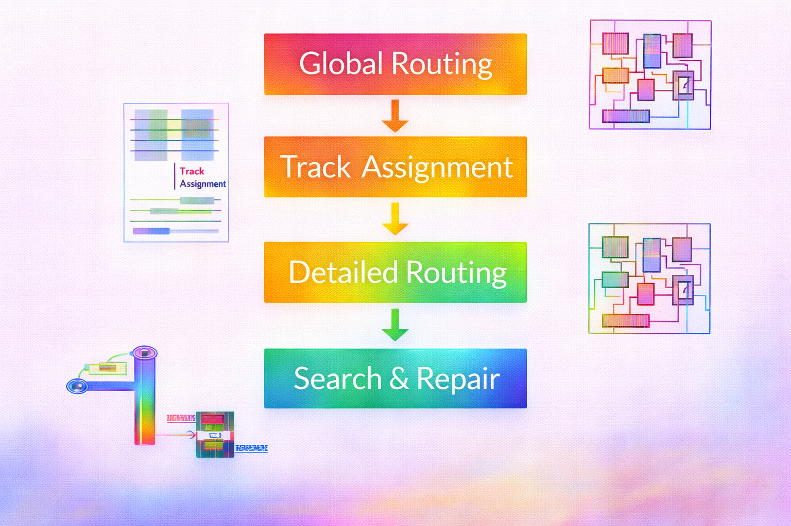
The routing stage follows placement and Clock Tree Synthesis (CTS). The objective of routing is to physically implement all net connections defined in the netlist while satisfying timing, congestion, and design rule constraints.
The different tasks performed in the routing stage are as follows:
1. Trial / Global Routing
Global routing identifies routable paths for nets between their driving and receiving pins using the shortest possible routes.
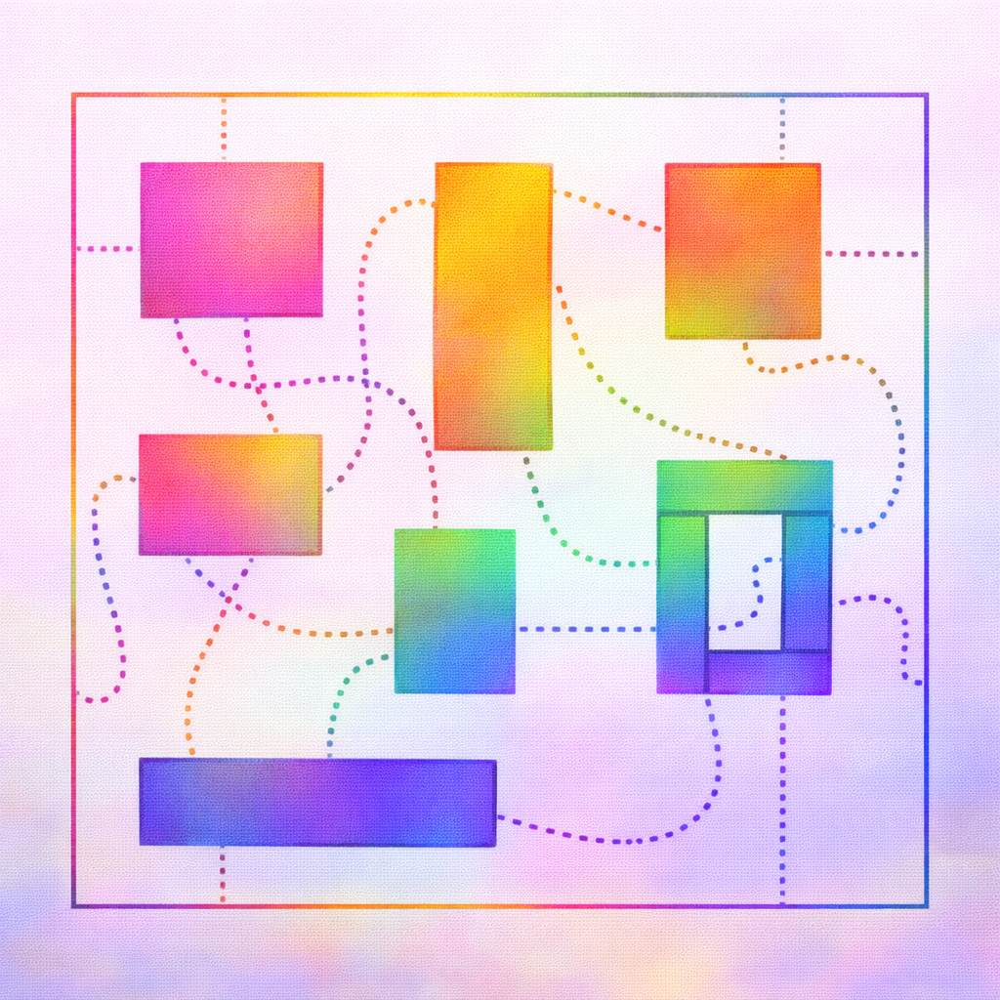
Key characteristics:
- Does not strictly consider detailed DRC rules, but provides an overall view of routing feasibility.
- Gives an early estimate of congestion and identifies problematic regions.
- Assigns approximate layers to nets.
- Divides the routing region into rectangular tiles called Global Routing Cells (GRCs).
- Assigns net segments within GRCs instead of exact metal shapes.
- Avoids congested areas and unnecessary long detours.
- Avoids routing over placement and routing blockages.
- Avoids routing for pre-routed nets such as Power Rings, Stripes, and Rails.
- Uses Steiner Tree and Maze Routing algorithms for path estimation.
Additional Important Points (Added):
- Global routing produces demand vs supply reports (overflow maps).
- Helps guide placement optimization before detailed routing.
- Provides wirelength and via count estimates.
- Used for early parasitic estimation and timing analysis.
- Helps decide whether further floorplan or placement changes are required.
2. Track Assignment
Track Assignment takes the global routed layout and assigns each net to specific routing tracks and layers.
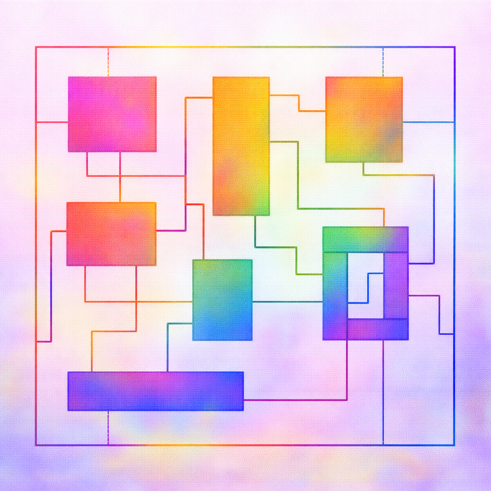
Key characteristics:
- Converts global routes into actual track-based routes.
- Does not strictly follow physical DRC rules, but is timing-aware.
- Helps in via minimization by intelligently assigning layers.
- Resolves overlaps between global routes by rerouting or adjusting tracks.
Additional Important Points (Added):
- Assigns preferred directions to layers (e.g., M1-horizontal, M2-vertical).
- Balances routing density across tracks.
- Creates a clearer picture for detailed routing.
- Helps reduce congestion hotspots before final routing.
3. Detailed / Nano Routing
Detailed routing is the final and most precise routing stage.
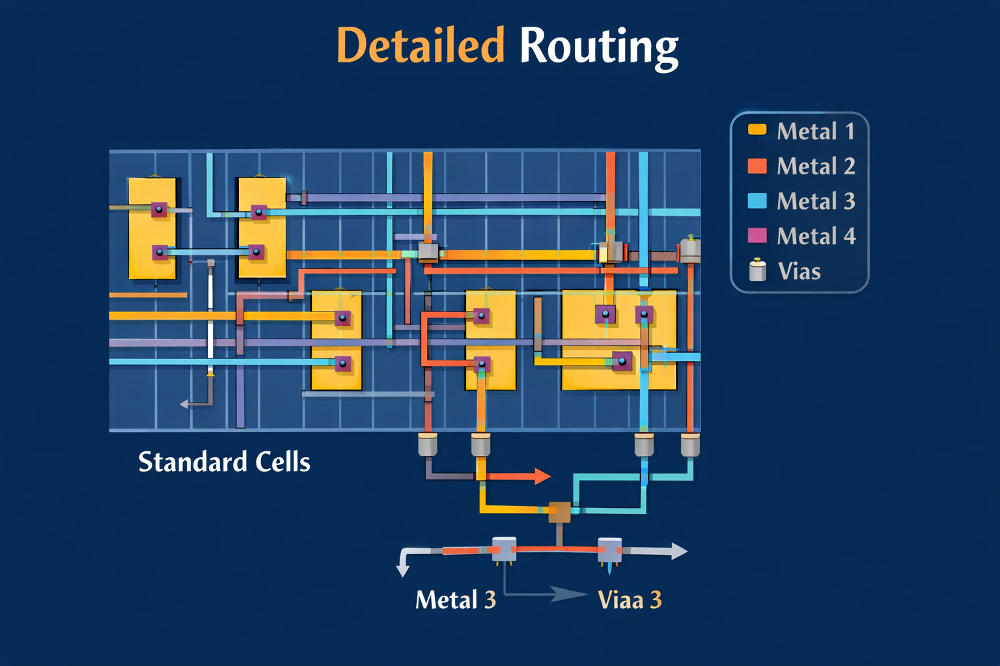
Key characteristics:
- Uses track-routed segments as a guide and performs full DRC-aware routing.
- Fully timing-driven and congestion-aware.
- Finalizes exact metal shapes and via placements.
- Routing is completed after analyzing congestion issues from global routing.
- If congestion is high, the following may be done before detailed routing:
- Add density screens,
- Modify floorplan,
- Adjust macro placement,
- Apply additional routing blockages.
- Filler cells are inserted before detailed routing.
Additional Important Points (Added):
- Fixes all DRC violations (spacing, width, enclosure, antenna, etc.).
- Fixes signal integrity (SI) issues such as crosstalk where applicable.
- Performs final parasitic extraction (RC extraction).
- Final timing analysis is done after detailed routing.
- Ensures LVS-clean routing (no missing or extra connections).
4. Grid-Based Routing
Routing is performed on predefined routing grids.
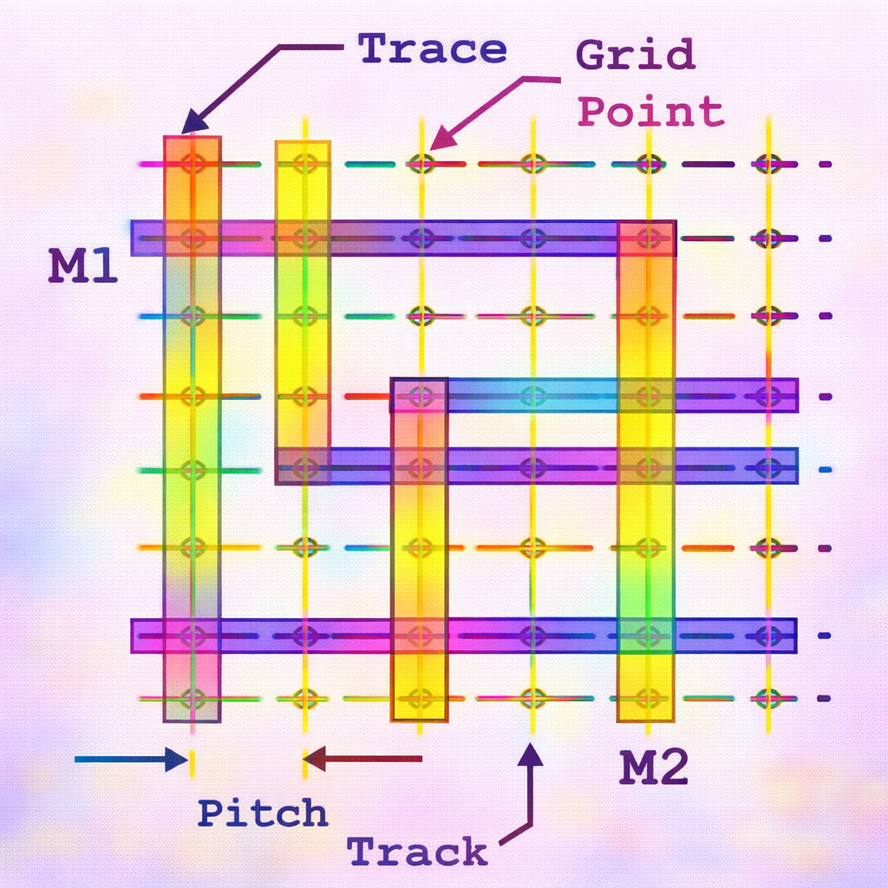
Key characteristics:
- Metal traces (routes) are built along and centered on routing tracks on grid points.
- Different types of grids used in physical design:
- Manufacturing Grid – Smallest resolution allowed by the fabrication process.
- Routing Grid (Pitch Grid) – Defines allowed routing track positions.
- Placement Grid – Defines legal cell placement positions.
- The routing grid dimension must be a multiple of the manufacturing grid to ensure manufacturability.
Additional Important Points (Added):
- Routing grid alignment avoids misalignment between layers.
- Ensures consistent spacing and pitch across the chip.
- Helps maintain uniform routing density.
- Supports layer preference (preferred vs non-preferred directions).
- Helps reduce jogs and unnecessary vias.
Overall Routing Flow Summary (Added for Completeness)
- Global Routing → Estimate paths, identify congestion.
- Track Assignment → Assign tracks and layers, reduce vias.
- Detailed Routing → Final DRC-clean routing.
- Post-Routing Optimization → Fix timing, SI, and EM issues.
- Final Signoff → LVS, DRC, STA, SI, and EM checks.
Post Routing Optimization
After detailed routing, further optimization is required to improve signal quality, timing, reliability, and manufacturability. This stage is called Post Routing Optimization.
1. Signal Integrity (SI) Optimization
Signal Integrity optimization is performed to reduce noise, crosstalk, and glitch effects on critical signals.
Your points (kept):
- SI Optimization using NDRs (Non-Default Rules)
- Shielding for sensitive nets
Additional important points (added):
- Reduction of crosstalk between aggressor and victim nets
- Slew control using buffer insertion or resizing
- Reduction of overshoot/undershoot on critical signals
- Optimization of coupling capacitance
- Avoid long parallel routing for critical nets
- Use of preferred routing layers for sensitive signals
- Re-routing of critical nets if required
Types of Shielding for Sensitive Nets
i. Same Layer Shielding
- Shield wire placed on the same metal layer as the signal net
- Reduces lateral coupling noise
- Requires more routing space
- Easier to implement but less effective than coaxial shielding
ii. Adjacent Layer / Coaxial Shielding
- Shield placed on adjacent metal layers (above/below)
- Provides better isolation than same-layer shielding
- More effective for high-frequency and clock nets
- Slightly increases routing complexity and metal usage
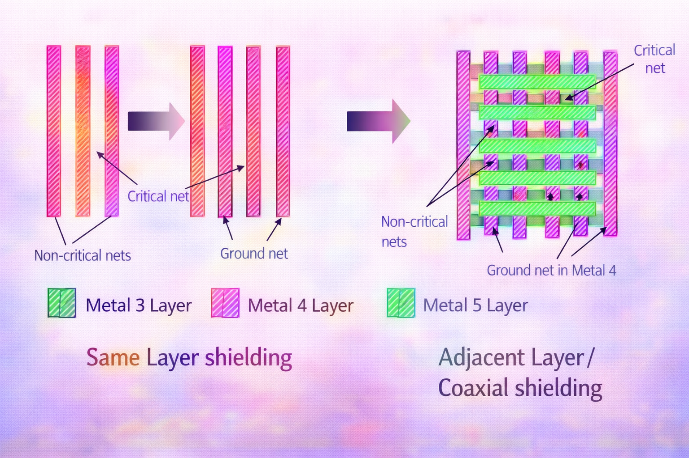
Filler Cell Insertion
Filler cells are used to fill empty spaces between standard cells to ensure proper well and implant continuity.
Your points (kept):
- Filler cells can be inserted before or after detailed routing.
- If fillers contain metal routing other than pre-routing, they should be inserted before routing.
- Width of the smallest filler cell equals the Placement Grid Width.
- Once fillers are inserted, placement is fixed and cells cannot be moved further.
Additional important points (added):
- Prevents DRC violations related to well and implant layers
- Ensures uniform power distribution
- Avoids manufacturing defects at row boundaries
- Helps maintain regular cell row structure
- Required before final signoff checks
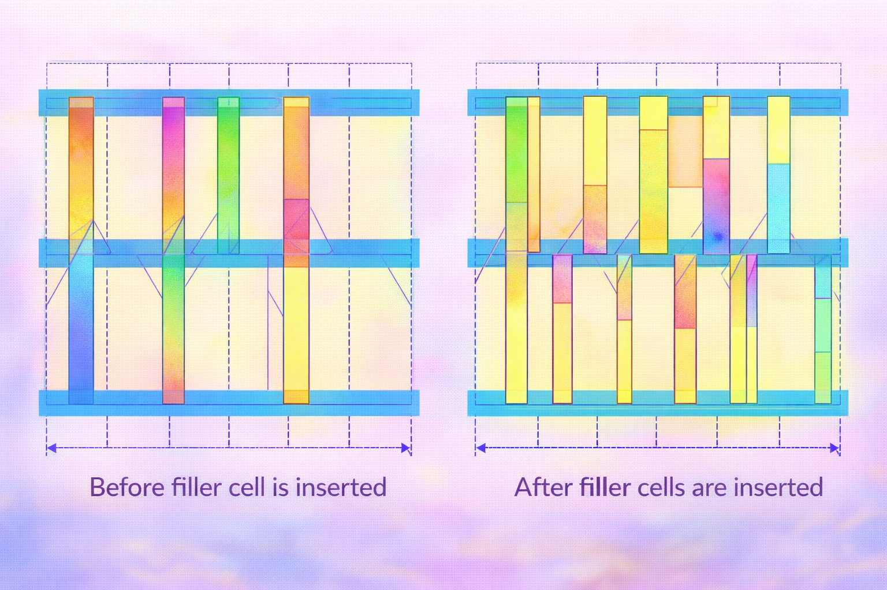
Metal Fill
Metal fill is used to satisfy metal density rules during fabrication.
Your points (kept):
- Used to fill empty metal tracks with metal shapes
- Two types of metal fill:
- Floating Metal Fill
- Grounded Metal Fill
Additional important points (added):
- Prevents over-etching and metal erosion
- Improves planarity during CMP (Chemical Mechanical Polishing)
- Helps maintain uniform mechanical stress across the chip
- Can impact parasitic capacitance if not controlled
- Must follow spacing rules from neighboring nets
Types of Metal Fill
i. Floating Metal Fill
- Not connected to VDD or GND
- Does not fully shield aggressor nets
- Easier to implement
- Can increase signal integrity (SI) issues
ii. Grounded Metal Fill
- Connected to ground (VSS)
- Provides better shielding against noise
- Reduces crosstalk and coupling effects
- More complex to implement
- Slightly increases routing and via usage
Spare Cells (Tie-up / Tie-down Cells)
Tie cells are special cells used for electrical stability and reliability.
Your points (kept):
- Tie cells connect the gate of cells to VDD/VSS
- Reduce ESD issues
- Help avoid power bounce and ground bounce
- Tie cells are MOS devices in diode-connected configuration
Additional important points (added):
- Used for unused input pins of standard cells
- Prevent floating nodes
- Improve noise immunity
- Reduce leakage risk on unconnected gates
- Often placed automatically by PnR tools
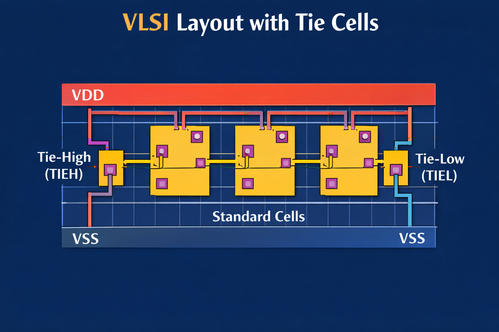
Outputs of Routing
After detailed routing and post-routing optimization, the following outputs are generated:
Your points (kept):
- Routing database file or DEF file with no opens or shorts
- Final Timing Report
- Congestion Report
- Skew & Insertion Delay Report
- Geometric layout of all nets
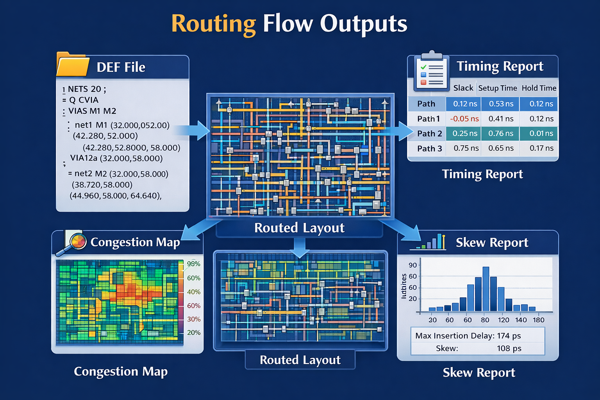
Additional important outputs (added):
- Parasitic extraction file (SPEF/RC file)
- DRC clean report
- LVS clean report
- Power analysis report
- EM (Electromigration) report
- SI (Signal Integrity) analysis report
Decap Cells (Decoupling Capacitor Cells)
Decap filler cells are small capacitors placed between VDD and GND across the layout. When the logic circuit draws a high amount of current (during switching activity), these capacitors supply extra charge to the circuit locally. When the circuit is not drawing current, the decap cells get recharged back to their maximum capacitance.
Mathematically, the voltage drop on the power network can be expressed as:
V=IR+LdidtV = IR + L \frac{di}{dt}V=IR+Ldtdi
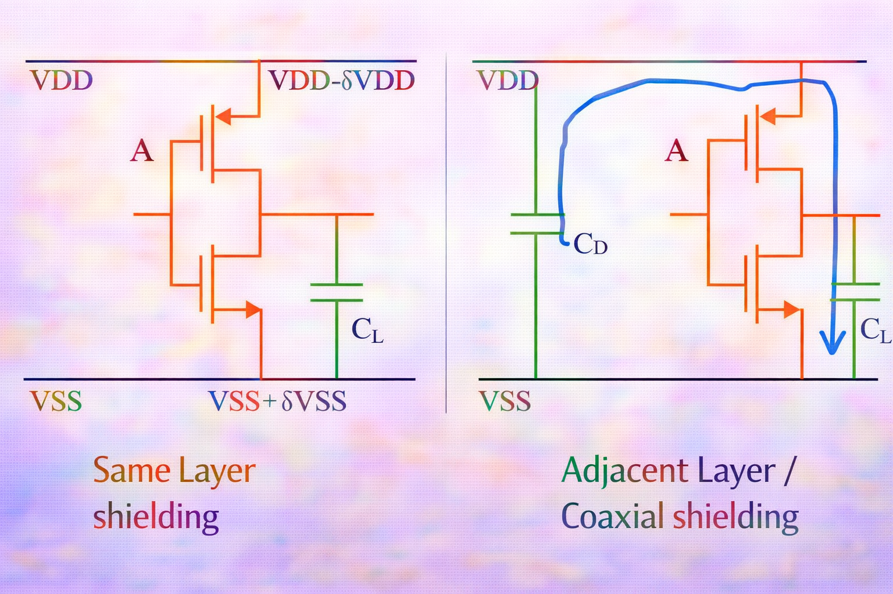
Where,
- IR drop = Voltage drop due to resistance of metal layers
- L(di/dt) drop = Voltage drop due to inductance when current changes rapidly
If the voltage drop is greater than the Noise Margin (NM) of an inverter, it may cause incorrect logic behavior.
For example, assume:
- Supply voltage = 1V
- Noise Margin (NM) = 0.4V
Then, the minimum valid logic ‘1’ level = 1 – 0.4 = 0.6V
Now, if the voltage drop is 0.5V, the effective voltage becomes:
1 – 0.5 = 0.5V, which is below 0.6V, and the inverter may interpret this as logic ‘0’, causing functional failure.
This is where decap cells come into the picture. These cells store charge and act as local charge reservoirs. They are placed close to power-hungry cells. Whenever these cells switch and demand sudden current, the decap cells discharge and supply the required current locally, helping to keep the supply voltage stable and reducing IR drop and Ldi/dt effects.
Role of Decap Cells in Modern Technology Nodes
With increasing clock frequency and decreasing supply voltage as technology scales, maintaining power integrity has become more critical. Typically, decap cells are used to keep the power supply within ±10% of the nominal voltage.
Key roles of decap cells:
- Store local charge and provide instantaneous current during switching
- Reduce IR drop and L(di/dt) noise
- Stabilize power supply near high switching activity regions
- Reduce ground bounce and power bounce
- Improve signal integrity and functional reliability
Decap cells are usually implemented using NMOS transistors in a CMOS process, behaving like capacitors between VDD and GND.
Technology Scaling Challenges (90nm and below)
At 90nm and below:
- Gate oxide thickness reduces (~2.0nm at 90nm node)
- This introduces two major issues:
- Higher risk of ESD-induced oxide breakdown
- Increased gate tunneling leakage
As technology scales further:
- ESD vulnerability increases
- Static power consumption increases due to leakage
- More careful placement and sizing of decap cells is required
Disadvantages of Decap Cells (Your Points – Retained)
- High Leakage Power
Decap cells are very leaky and contribute to static power consumption.
- Interaction with Package RLC Network
- The chip (die) behaves like a small capacitor with small resistance (R) and inductance (L).
- The package has much larger R, L, and C values.
- Excessive decap insertion may create resonance between on-chip capacitance and package RLC network.
- This can cause VDD and GND oscillations, leading to functional failures.
- Many designs fail due to improper decap planning and resonance effects.
Additional Important Points
Where to Place Decap Cells
Decap cells are typically placed:
- Near high switching activity blocks (e.g., clock buffers, large drivers)
- Around macros and large IP blocks
- Near power pads and core rings
- In congested regions with high IR drop
Types of Decap Cells
- Local Decaps – Placed near standard cells
- Macro Decaps – Placed near large IPs
- Grid Decaps – Distributed across the core area
Decap Insertion Strategies
- Pre-CTS Decap insertion – To improve power integrity before clock tree synthesis
- Post-CTS Decap insertion – To fix residual IR drop issues
- Targeted Decap insertion – Only in high IR drop regions based on analysis
Impact on Timing and Power
- Helps improve timing by reducing voltage drop
- Improves hold/setup stability
- Increases area and leakage power slightly
- Needs careful trade-off between power integrity and area/power overhead
Tool-Based Decap Insertion (Industry Practice)
Most PnR tools support automated decap insertion using commands such as:
- create_decaps
- add_decaps
- insert_decap_cells
These tools insert decap cells based on:
- IR drop analysis
- Power grid density
- Switching activity
Filler Cells
After completion of placement and routing, there are usually empty gaps left in the layout where no standard cells are placed. It is not practical to place standard cells continuously without any gaps because doing so can lead to severe routing congestion and may also result in poor timing quality of results (QoR).
For example, if the design utilization is around 70%, then approximately 30% of the core area remains unfilled. If we perform a base-layer DRC check at this stage (using a tool that checks implant and well layers), we may observe violations such as:
- “NWell minimum spacing not met”
- “Well continuity violation”
- “Implant spacing violation”
This is where filler cells become necessary.
For a DRC-clean layout, NWell continuity must be maintained across each standard cell row. It is mandatory that there should be no well or moat spacing violations, i.e., spacing should not be less than the minimum allowed by the technology rules.
Although one could try to space cells apart to avoid minimum spacing violations, this is very difficult to manage in a row-based standard cell layout. Moreover, in a tap-less standard cell library, filler cells are even more critical because they ensure proper well tie-offs. Even if spacing between cells is greater than the minimum allowed well spacing, there can still be continuity errors in power connections unless each isolated well region has its own tie cell.
Filler cells are physical-only cells with no logical functionality. Their main purpose is to:
- Continue the base layers such as NWell and PWell,
- Maintain continuous implant regions,
- Provide VDD and VSS pins aligned with standard cell rails, and
- Ensure uniform power/ground connectivity across the row.
In every standard cell library, there is at least one filler cell with the smallest tile width, which matches the placement grid. Using this smallest filler, any gap left after placement can be filled precisely, provided that the placement followed the correct placement grid.
DEF (Design Exchange Format)
DEF (Design Exchange Format) file is used to represent the physical layout of an Integrated Circuit (IC) in ASCII (human-readable) format.
A DEF file is strongly associated with the Library Exchange Format (LEF) file. Both files together are required for correct interpretation and display of the physical design in any EDA tool.
The DEF format was developed by Cadence Design Systems. Whenever we need to transfer a physical design database from one EDA tool to another for further implementation, verification, or analysis, we use a DEF file.
For example:
- IR drop analysis on PnR database
- Static Timing Analysis (STA) on post-placement or post-routing database
- Migration from Innovus to ICC2 or vice versa
In such cases, the design is exported in the form of a DEF file.
What Information Does DEF Contain?
A DEF file contains design-specific information and represents the state of the design at any point during the physical design flow (after floorplanning, placement, CTS, or routing).
DEF conveys both:
1. Logical Design Data
This includes:
- Internal connectivity (netlist information)
- Group information (e.g., groups, bounds, regions)
- Physical constraints applied to the design
2. Physical Design Data
This includes:
- Placement location of standard cells and macros
- Orientation of components
- Routing geometry (metal shapes, vias, special nets, etc.)
- Blockages, regions, and floorplan details
DEF File Sections (Standard Order)
A standard DEF file contains the following main sections, and the order of statements is important:
[VERSION statement]
[DIVIDERCHAR statement]
[BUSBITCHARS statement]
[DESIGN statement]
[TECHNOLOGY statement]
[UNITS statement]
[DIEAREA statement]
[ROW statement]
[TRACKS statement]
[CELLGRID statement]
[VIAS statement]
[NONDEFAULTRULES statement]
[COMPONENTS statement]
[PINS section]
[BLOCKAGE section]
[FILLS section]
[SPECIALNETS section]
[NETS section]
[SCANCHAINS section]
[GROUPS section]
[BEGINEXT section]
END DESIGN statement
Header Information in DEF
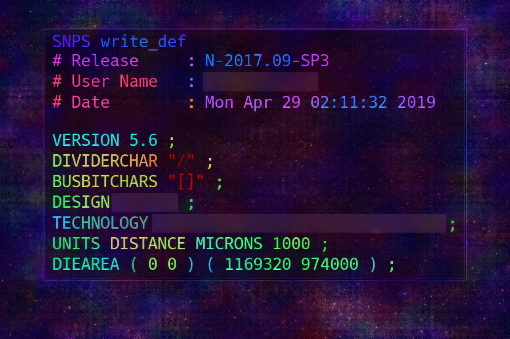
In the header part of the DEF file, the following information is specified:
- DEF version
- Design name
- Technology name
- Units (microns or database units)
- Die area (DIEAREA)
This information defines the global context of the physical design.
ROW Statement in DEF
The ROW section defines the placement rows for standard cells.
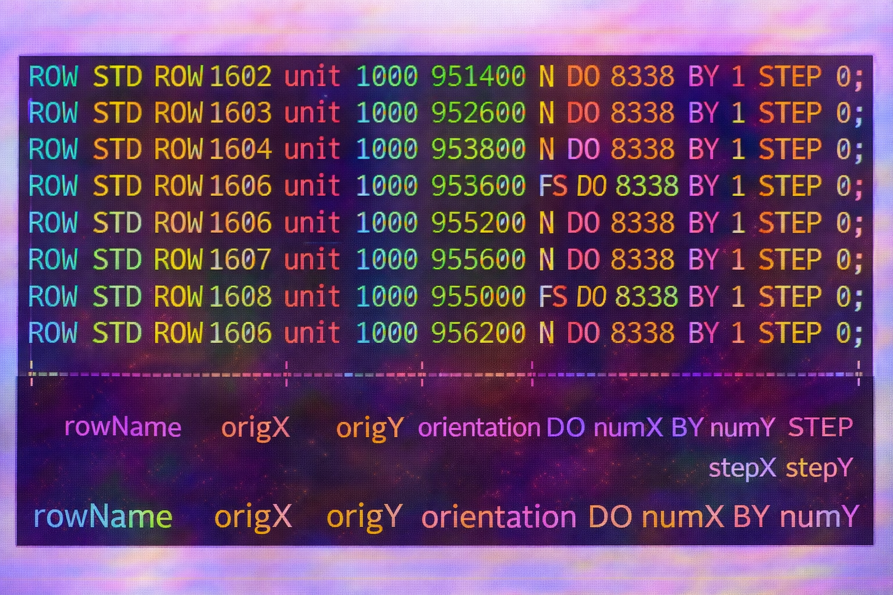
Syntax:
ROW rowName siteName origX origY siteOrient
DO numX BY numY
STEP stepX stepY
+ PROPERTY {propName propVal} ;
Explanation of Fields
rowName
- Specifies the name of the placement row.
siteName
- Specifies the LEF site to be used for this row (e.g., CORE, CORE_TAP, etc.).
origX, origY
- Specifies the location of the first site in the row in the layout.
siteOrientation
- Specifies the orientation of all sites in that row (e.g., N, S, E, W, FN, FS, etc.).
DO numX BY numY
- Specifies the repeating set of sites that create the row.
- One of the values (numX or numY) must be 1.
- If numY = 1, the row will be horizontal.
- If numX = 1, the row will be vertical.
STEP stepX stepY
- Specifies the spacing between sites:
- stepX → spacing in horizontal direction
- stepY → spacing in vertical direction
Example of ROW Statement (Illustrative)
ROW ROW1 CORE 0 0 N DO 100 BY 1 STEP 0.8 0.0 ;
This means:
- Row name = ROW1
- Site = CORE
- Starts at (0,0)
- Orientation = North (N)
- 100 sites in X direction, 1 in Y direction
- Site pitch = 0.8 microns horizontally
TRACKS Statement
Tracks define the routing grid used by the router.
Syntax:
TRACKS {X | Y} start DO numTracks STEP space LAYER layerName ;
Explanation:
- X or Y → Specifies horizontal or vertical tracks
- start → Starting coordinate of first track
- DO numTracks → Number of tracks
- STEP space → Spacing between tracks
- LAYER layerName → Metal layer associated with the tracks
Example:
TRACKS X 0.4 DO 200 STEP 0.8 LAYER M2 ;
This means:
- Horizontal tracks start at 0.4 microns
- 200 tracks in X-direction
- Track pitch = 0.8 microns
- Assigned to Metal layer M2
Additional Important DEF Sections (Added for Completeness)
COMPONENTS Section
- Lists all placed standard cells and macros with their coordinates and orientation.
PINS Section
- Defines the locations of input/output pins.
SPECIALNETS Section
- Defines power and ground routing (VDD, VSS, VSSIO, etc.).
NETS Section
- Contains detailed routing information for signal nets (metal segments and vias).
BLOCKAGE Section
- Specifies placement and routing blockages.
VIAS Section
- Defines custom vias used in the design.
NONDEFAULTRULES Section (NDRs)
- Defines special routing rules for critical nets (e.g., clock nets).
Why DEF is Important in Physical Design
DEF is widely used because it is:
- Tool-independent
- Human-readable
- Standardized
- Compatible with multiple EDA tools
- Suitable for design handoff between teams
GDS (GDSII – Graphic Data System II)
GDSII is a standard file format used to represent the physical layout of an Integrated Circuit (IC), similar to formats such as JPEG, DOCX, or XLSX for images/documents.
It is primarily used for:
- IP handoff (IP owner → Physical Design team), and
- Manufacturing handoff (Physical Design team → Foundry for fabrication),
- Physical verification using EDA tools such as Mentor Calibre, Synopsys ICV, etc.
What does GDS contain?
In simple terms, GDSII encompasses the entire design architecture — whether it is:
- an individual IP,
- a memory block, or
- a full chip design —
embedded in the form of geometrical shapes corresponding to physical layers such as:
- P-substrate
- Diffusion
- Poly
- Contacts
- Metal layers and vias (layer-wise and planar geometry)
These shapes together represent the actual fabricated silicon structure.
File Format Characteristics
- GDSII is a binary file format, not human readable.
- It can only be read and interpreted by specialized EDA tools such as:
- Mentor Calibre
- Synopsys IC Validator (ICV)
- Cadence Virtuoso / Innovus viewers
- Other layout viewers
You cannot open or understand a GDS file directly in a text editor.
Relation to MOS Structure and Layout
If we consider the cross-sectional view of a MOS transistor and its corresponding layout:
- Transistor fabrication involves multiple sequential growth and patterning steps.
- Each step corresponds to a different physical layer (substrate, diffusion, poly, contacts, metals, vias).
- These layers are represented in GDS as planar geometrical shapes, stacked “one above the other”.
Thus, GDS captures this entire layer-by-layer physical construction of the chip.
Hierarchy in GDS
A GDSII file contains all layers from P-substrate up to the top metal layer.
- All design elements are contained under a single top-level cell (Top Cell).
- Other design blocks (IP, macros, standard cells, etc.) are referenced hierarchically within this top cell.
- The same cell may be instantiated multiple times under the top cell.
This hierarchical structure helps in efficient storage and reuse of repeated blocks.
Netlist
A design can be represented in multiple formats, and Gate-Level Netlist (GLN) is one of them.
Flow from RTL to Netlist
Once the design specification is ready:
- The functionality is written in HDL (Verilog/VHDL).
- The RTL code is verified functionally.
- The code undergoes Linting to check synthesizability and coding style.
- The verified RTL is then passed to the Synthesis team.
What is Synthesis?
Synthesis is the process of converting RTL code into a technology-specific Gate-Level Netlist through:
- Translation
- Mapping
- Optimization
What is a Gate-Level Netlist?
A Gate-Level Netlist is a textual description of a digital circuit using standard cells (gates, flops, etc.).
- It represents the same functionality as the RTL code.
- It can be expressed as interconnections of logic gates or even transistors.
- It serves as the input to Physical Design (PnR) tools.
Pre-layout vs Post-layout Netlist
The netlist from the synthesis tool is fed into PnR tools to generate the physical layout of the chip.
During placement and routing:
- The netlist may be modified (buffer insertion, gate sizing, clock tree insertion, etc.),
- But it remains functionally equivalent to the original RTL.
The netlist after layout is called Post-Layout Netlist.
Key Difference:
- Pre-layout netlist: No clock tree buffers.
- Post-layout netlist: Includes Clock Tree Buffers, Inverters, and additional cells inserted during CTS.
Understanding Your Sample Gate-Level Netlist
You have provided a sample gate-level netlist of a 16-bit counter module:
module counter (clk, reset, enable, dat_out);
Observations from your netlist:
- It contains sequential elements such as:
- EDFFX2AD
- DFFQXLAD
These represent flip-flops used to store dat_out.
- It contains combinational logic gates such as:
- NAND, NOR, XOR, XNOR, INV, AND, AOI, OAI, etc.
These implement the counter logic.
- Internal wires such as:
- N69, N70, n42, n43, ...
represent intermediate signals created during synthesis.
- The logic uses both:
- Enable (enable)
- Reset (reset)
which controls counter behavior.
This netlist is a Gate-Level Structural Description, not behavioral RTL.
Relation Between GDS and Netlist
Aspect | Netlist | GDS |
Level | Logical representation | Physical representation |
Readability | Human-readable | Binary, tool-readable |
Contains | Cells, gates, connections | Geometric shapes of layers |
Used by | PnR tools | Foundry & verification tools |
Stage | Before/after PnR | Final fabrication-ready output |
Understanding the Sample GLN (Gate-Level Netlist)
Module Declaration (Design Interface)
module counter (clk, reset, enable, dat_out);
This defines the top module name (counter) and its interface ports.
output [15:0] dat_out;
input clk, reset, enable;
- dat_out[15:0] → 16-bit output bus
- clk → clock input
- reset → synchronous/asynchronous reset (depends on library cell)
- enable → control signal to enable counting
Internal Nets (Wires)
wire N69, N70, N71, N72, N73, N74, N75, N76, N77, N78, N79, N80,
N81, N82, N83, N84, N86, N88, N90, N92, N94, N96,
n42, n43, n44, n45, n46, n47, n48, n49, n50, n51, n52,
n53, n54, n55, n56, n57, n58, n59, n60, n61, n62, n63,
n64, n65, n66, n67;
These are internal nets generated by the synthesis tool:
- Nxx → usually represent primary or optimized internal signals
- nxx → temporary or intermediate signals created during logic optimization
👉 Important:
These names are tool-generated and have no functional meaning like RTL names.
Sequential Elements (Flip-Flops)
Example of first three flip-flops:
EDFFX2AD\dat_out_sig_reg[0] (.D(N69), .E(N96), .CK(clk), .Q(dat_out[0]) );
EDFFX2AD\dat_out_sig_reg[1] (.D(N70), .E(N94), .CK(clk), .Q(dat_out[1]));
EDFFX2AD\dat_out_sig_reg[2] (.D(N71), .E(N92), .CK(clk), .Q(dat_out[2]));
What this means:
- EDFFX2AD → Library cell name (Edge-triggered D Flip-Flop)
- dat_out_sig_reg[i] → Instance name corresponding to each bit of dat_out
- Ports:
- .D(N69) → Data input comes from internal logic
- .E(N96) → Enable signal
- .CK(clk) → Clock input
- .Q(dat_out[0]) → Output to port
👉 This confirms that:
- dat_out is implemented using flip-flops
- The design is sequential (state-based), not purely combinational.
Combinational Logic Driving Flip-Flop D Inputs
Example logic for bit 0:
NOR2X1AD U99 (.A(dat_out[0]), .B(n43), .Y(N69));
- NOR2X1AD → 2-input NOR gate from the library
- Inputs:
- dat_out[0] (current state feedback)
- n43 (derived from reset)
- Output: N69 → Goes to .D of dat_out_sig_reg[0]
This is part of the next-state logic of the counter.
Reset Logic
INVX1AD U100 (.A(reset), .Y(n43));
- INVX1AD → Inverter
- Converts reset → n43 (active-low version of reset)
This n43 is used in multiple logic gates to control counter behavior.
What This Netlist Represents (Summary)
Your sample GLN is:
✔ A Gate-Level Structural Netlist
✔ Generated after logic synthesis
✔ Contains:
- Standard cells (Flip-flops + logic gates)
- No behavioral constructs (always, if, for, etc.)
- No high-level RTL logic
✔ Suitable for Physical Design (PnR) input
Key Observations from This Netlist
- It is NOT RTL → It is a structural description.
- Clocked design → Uses flip-flops.
- Counter behavior → Feedback from dat_out to generate next state.
- Tool-optimized logic → Internal nets are renamed (N69, n43, etc.).
- Ready for Placement & Routing → This is exactly what PnR tools expect.
SPEF (Standard Parasitic Exchange Format) — Complete View
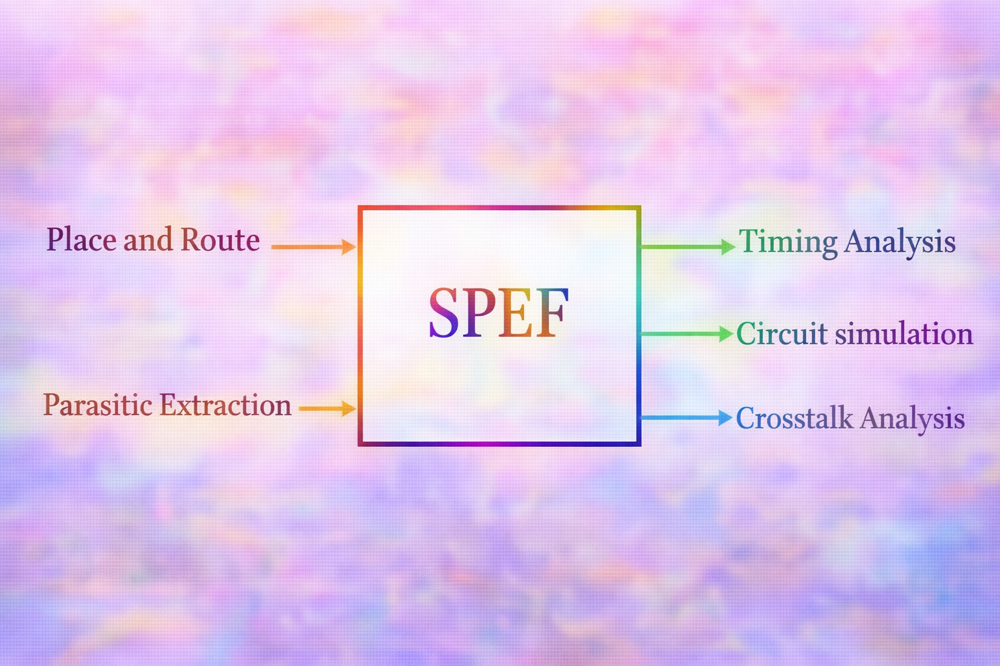
SPEF allows the representation of parasitic information of a design (R, L, and C) in an ASCII (American Standard Code for Information Interchange) format. A user can read and check the values in a SPEF file. Users would never create this file manually — it is automatically generated by extraction tools. It is mainly used to pass parasitic information from one tool to another.
Interconnect parasitics depend on the process. SPEF supports the specification of all the cases like best-case, typical, and worst-case values. These triplets (best, typical, worst) are allowed for R, C, and L values, ports, slew, and loads. The units of the parasitics R, C, and inductance L are specified at the beginning of the SPEF file.
SPEF can be generated by:
- Place-and-Route tool (post-route extraction), or
- Dedicated parasitic extraction tool (Calibre xRC, StarRC, Quantus, etc.)
This SPEF is then used by:
- Static Timing Analysis (STA) tools
- In-circuit simulation
- Signal Integrity (crosstalk) analysis
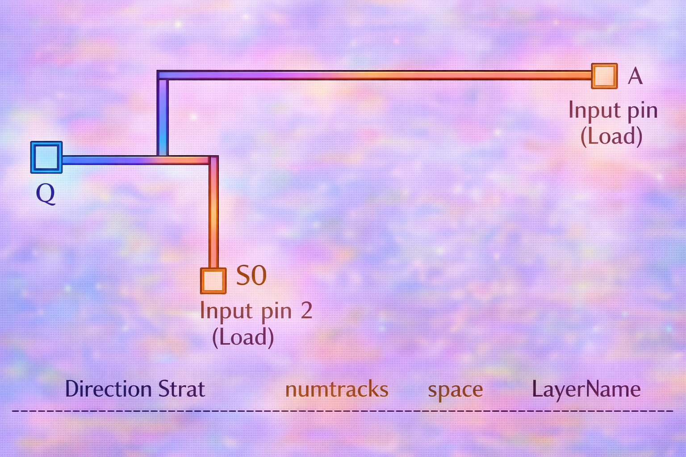
Parasitic Models Supported by SPEF
1. Distributed Net Model (D_NET) — Most Accurate
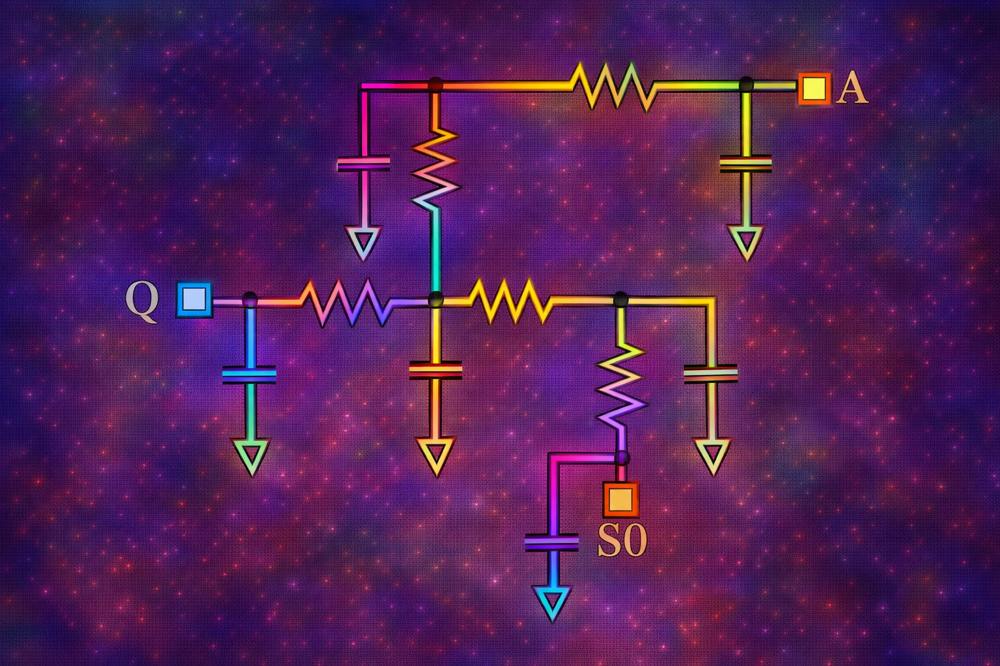
In this model, each segment of a routed net has its own R and C values.
When used:
- Sign-off timing
- SI analysis
- Accurate delay modeling
Pros:
✔ Highest accuracy
✔ Best for critical nets
Cons:
✖ Larger file size
✖ More simulation time
2. Reduced Net Model (R_NET) — Balanced Model
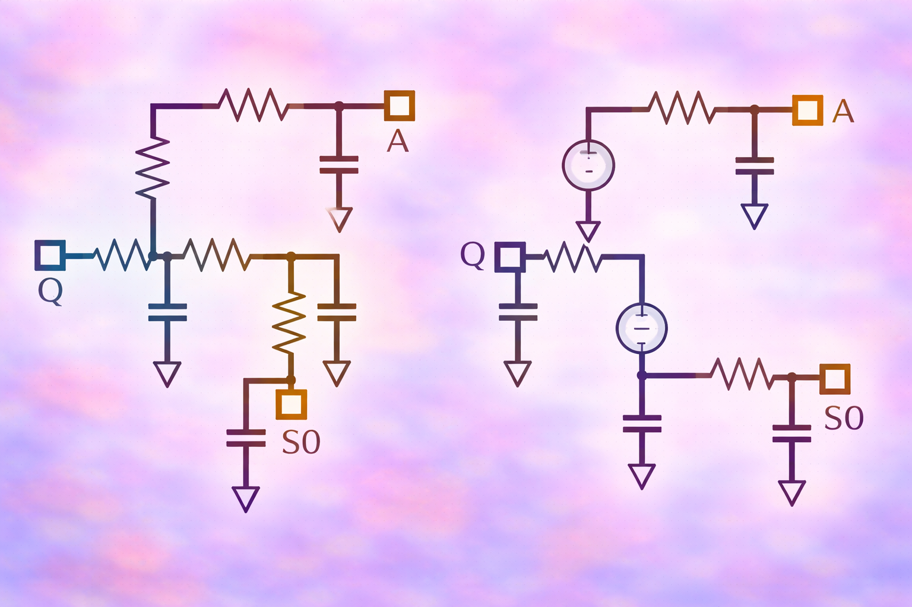
On the load pins, a single reduced R and C is used, and on the driver pin, a Pi-model (C–R–C) is used.
Driver → (C — R — C) → Loads
When used:
- Faster STA with reasonable accuracy
- Early sign-off checks
Pros:
✔ Good accuracy
✔ Smaller than DSPF
Cons:
✖ Less accurate than D_NET
3. Lumped Capacitance Model — Least Accurate
Only one total capacitance is specified for the entire net.
When used:
- Very early design stages
- Rough timing estimation
Pros:
✔ Smallest file
✔ Fastest analysis
Cons:
✖ Poor accuracy
✖ Not used for sign-off
Parasitic Formats (Important Comparison)
Format | Full Form | Accuracy | File Size | Usage |
DSPF | Detailed Standard Parasitic Format | Very High | Very Large | Golden sign-off |
RSPF | Reduced Standard Parasitic Format | Medium | Smaller than DSPF | STA-friendly |
SPEF | Standard Parasitic Extraction Format | Compact & Flexible | Smallest | Industry standard |
👉 Key Point:
SPEF is preferred in industry because it is compact, hierarchical, and complete.
Structure of a Typical SPEF File (Additional Point)
A SPEF file generally contains:
*SPEF "1.0"
*DESIGN counter
*UNITS
R 1 OHM
C 1 PF
L 1 H
*PORTS
...
*D_NET net1
...
*R_NET net2
...
Why SPEF is Critical in Physical Design (Extra Points)
- More realistic timing than ideal netlist
- Helps in:
- Setup analysis
- Hold analysis
- Crosstalk (glitch) analysis
- Used in:
- Post-Route STA
- Power analysis
- Enables:
- RC delay calculation
- Interconnect delay modeling
SPEF vs SDF (Common Interview Question)
SPEF | SDF |
Contains R, C, L parasitics | Contains timing delays only |
Used before/with STA | Used after timing calculation |
More physical | More logical |
Used by extraction & STA | Used for back-annotation |
Route SCRIPT
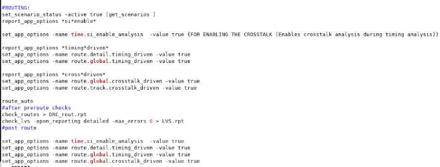
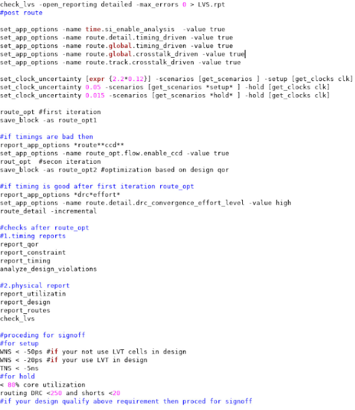